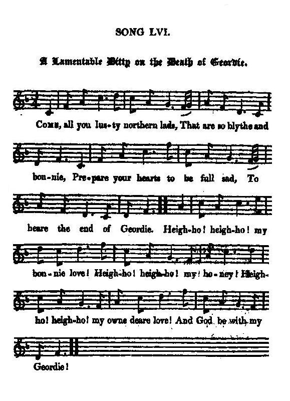
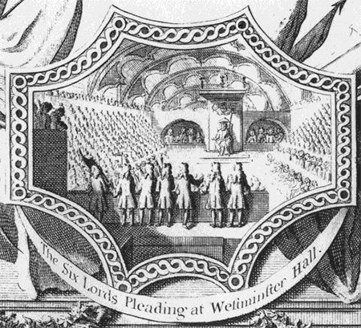

The Death of George Collingwood
La mort de George Collingwood
24th February 1716
Tune - Mélodie"The Death of George Collingwood"
from Hogg's "Jacobite Relics" 2nd Series N°56 page 104 (1821)
Sequenced by Christian Souchon

|
To the tune:
This song I likewise got from Mr David Constable, before either he or I had any notion of collecting the Jacobite Relics of the country. I was likewise obliged to his father for a curious old MS. ballad, which came out of time after the first volume was printed, and much more for a copy of Wood's Peerage, without which I should never have been able to get forward. Although it is merely conjecture, the song is supposed to have related to the death of George Collingwood of Eslington, Esq. mentioned in " Lord Derwentwater's Goodnight," Song xi. who was executed at Liverpool, and, being lame at the time, was carried to the gallows in a chair." James Hogg in "Jacobite Relics, vol II". |
A propos de la mélodie:
"C'est encore Mr David Constable qui m'a communiqué ce chant, à un moment où ni lui ni moi n'avions en tête de collecter les Reliques Jacobites de ce pays. J'étais redevable à son père d'un ancien manuscrit de ballades, découvert après la parution du premier volume et, plus encore, d'un exemplaire du "Nobiliaire" de Wood, sans lequel je n'aurais pas pu progresser dans mon travail. Bien que cela ne soit pas une certitude, on pense que ce chant a trait à la mort de George Collingwood d'Eslington, dont il est question dans " Lord Derwentwater's Goodnight," (chant N°11). Il fut exécuté à Liverpool, et comme il était paralysé à ce moment-là, il fut conduit à la potence dans une chaise à porteurs." James Hogg in "Jacobite Relics, vol II". |

|
A LAMENTABLE DITTY ON THE DEATH OF GEORDIE
1. Come, all you lusty northern lads, That are so blythe and bonnie, Prepare your hearts to be full sad, To heare the end of Geordie. Heigh-ho! heigh-ho! my bonnie love! Heigh-ho! heigh-ho! my honney! Heigh-ho! heigh-ho! my owne dear love! And God be with my Geordie! 2. When Geordie to his trial came, A thousand hearts were sorry; A thousand lasses wept full sore, And all for love of Geordie. Heigh-ho, &c. 3. Some did say he would escape, Some at his fall did glory; But these were clownes and fickle louns, And none that loved Geordie. Heigh-ho, &c. 4. Might friends have satisfied the law, Then Geordie would find many ; Yet bravely did he plead for life, If mercy might be any. Heigh-ho, &c. 5. But when this doughty carle was cast, He was full sad and sorry; Yet boldly did he take his death, So patiently dyde Geordie. Heigh-ho, &c. 6. As Geordie he went up the gate, He tooke his, leave of many; He tooke his leave of his laird's wife, Whom he lov'd best of any. Heigh-ho, &c. 7. With thousand sighs and heavy looks, Away from her he parted, With whom he often blyth had beene, Though now so heavy-hearted. Heigh-ho, &c. 8. He writ a letter with his owne hand, He thought he writ it bravely; He sent it to Newcastle towne, To his beloved lady. Heigh-ho, &c. 9. Wherein he did at large bewaile The occasion of his folly, Bequeathing life unto the law, His soule to heaven holy. Heigh-ho, &c. 10. " Why, lady, leave to weep for me; " Let not my ending grieve ye : " Prove constant to the man you love, " For I cannot relieve ye. Heigh-ho, &c. 11. " Out upon thee, Withrington ! " And fie upon thee, Phoenix! " Thou hast put down the doughty, " That led the men from Anix, Heigh-ho, &c. 12. " And fie on all such cruell carles, " Whose crueltie's so fickle, " To cast away a gentleman " In hatred for so little! Heigh-ho, &c. 13. " I would I were on yonder hill, " Where I have beene full merry; " My sword and buckler by my side, " To fight till I be weary. Heigh-ho, &c. 14. " They well should know that took me first, " Though hopes be now forsaken : " Had I but freedome, arms, and health, " I'd dye ere I'd be taken. Heigh-ho, &c. 15. " But law condemns me to my grave; " They have me in their power: " There's none but Christ that can me save, " At this my dying houre." Heigh-ho, &c. 16. He call'd his dearest love to him, When as his heart was sorry; And speaking thus with manly heart, " Deare sweeting, pray for Geordie." Heigh-ho, &c. 17. He gave to her a piece of gold, And bade her give't her bairns; And oft he kiss'd her rosie lip, And laid her in his armes. Heigh-ho, &c. 18. And coming to the place of death, He never changed colour; The more they thought he would look pale, The more his veins were fuller. Heigh-ho, &c. 19. And with a cheereful countenance, (Being at that time entreated For to confesse his former life,) These words he straight repeated: Heigh-ho, &c. 20. " I never lifted oxe nor cow, " Nor never murder'd any; " But fifty horse I did receive " Of a merchant-man of Gary; Heigh-ho, &c. 21. " For which I am condemn'd to die, " Though guiltlesse I stand dying. " Deare gracious God, my soule receive, " For now my life is flying!" Heigh-ho, &c. 22. The man of death a part did act, Grieves me to tell the story. God comfort all the comfortlesse, That did so well as Geordie! Heigh-ho! heigh-ho! my bonnie love! Heigh-ho! heigh-ho ! my honey! Heigh-ho! heigh-ho! mine owne true love! Sweet Christ receive my Geordie! Source: "The Jacobite Relics of Scotland, being the Songs, Airs and Legends of the Adherents to the House of Stuart" collected by James Hogg, volume II published in Edinburgh by William Blackwood in 1821. |
 |
LA COMPLAINTE DE GEORGE COLLINGWOOD
1. Approchez, les hommes du Nord A la gaité proverbiale; Vous allez verser sur le sort De George d'amères larmes. Hé ho! Hé ho! Mon cher amour! Hé ho! Hé ho! Mon âme! Hé ho! Hé ho! Je prie Dieu pour Qu'à jamais il te garde. 2. Quand George vint devant la Cour, Se sont serrées bien des gorges. Et bien des yeux versaient des pleurs Hélas, pour l'amour de George. Hé ho!... 3. Les uns le voyaient évadé; D'autres saluaient sa chute; Ceux-là n'étaient que des valets Irréfléchis et des brutes. Hé ho!... 4. Malgré l'aide d'hommes de loi, Plus d'un a subi sa peine; Mais lui, seul et sans peur, plaida Pour sauver sa vie quand même. Hé ho!... 5. Lorsque son fier ami tomba - Une nouvelle navrante -, Son digne et courageux trépas Allait lui servir d'exemple. Hé ho!... 6. Remontant le Gate on le vit, Prendre congé de plus d'une; De la veuve du Lord aussi Qu'il chérissait plus qu'aucune. Hé ho!... 7. Regards lourds et mille soupirs: Il prenait congé de celle A qui tant d'heureux souvenirs L'unissaient, perte cruelle! Hé ho!... 8. De sa main même il rédigea Une lettre avec hardiesse! A sa femme qu'il sait là-bas, A Newcastle, il l'adresse. Hé ho!... 9. Il déplorait qu'un sort cruel Né de sa propre folie, Le forçât à remettre au Ciel, Son âme, aux juges sa vie. Hé ho!... 10. "Madame, il faut, sans mon secours, Sans que ma fin vous attriste, Qu'à celui qui fut votre amour Votre dévotion persiste. Hé ho!... 11. "N'as-tu pas honte, Withrington, Ressuscitant tel le Phénix, D'avoir terrassé le champion Qui mena les hommes d'Anix? [?] Hé ho!... 12. "Honte à tous ces gens sans aveu A la cruauté frivole Qui sacrifièrent un monsieur, Haineux, pour une babiole! Hé ho!... 13. "Que ne suis-je où je m'en donnais A coeur joie, parmi les arbres, A manier, jusqu'à m'écrouler Harassé, bouclier, sabre. Hé ho!... 14. "Bien que tout espoir soit perdu, Que mes agresseurs le sachent: Si sabre et bras m'étaient rendus, Ils m'auraient pris mort, ces lâches. Hé ho!... 15. "La loi me condamne au tombeau; Dans leurs griffes, ils m'enserrent. Point de salut, hors le Très-Haut, Quand vient mon heure dernière." Hé ho!... 16. Il a fait venir son amie Tant son coeur est plein de peine: Il lui dit "Priez pour Charlie O mon épouse que j'aime" Hé ho!... 17. Il lui donne une pièce d'or La priant de la remettre A ses enfants; et puis, très fort Entre ses bras il la serre. Hé ho!... 18. On ne l'aura pas vu blémir Sur les lieux de son supplice. Quand on pensait le voir pâlir, On s'étonnait qu'il rougisse. Hé ho!... 19. Et tout à fait maître de lui, Quand on voulut qu'il confesse Ses méfaits dans ce monde-ci, Il formula cette adresse: Hé ho!... 20. "Je n'ai jamais volé de boeufs, Je n'ai trucidé personne; D'un marchand de Garry j'ai re- Cu ces cent bêtes de somme. Hé ho!... 21. "C'est pourquoi l'on m'a condamné: Je clame mon innocence. Mon âme en Vos mains je remets, O Dieu juste, avec confiance." Hé ho!... 22. Je ne veux pas dire comment Le bourreau fit son ouvrage. Dieu console les braves gens Qui meurent avec courage! Hé ho! Hé ho! Sort malheureux! Hé ho! A pleine gorge Hé ho! Hé ho! Je crie vers Dieu Afin qu'il accueille George! (Trad. Christian Souchon (c) 2010) |
|
On 24 February Derwentwater was led out to Tower Hill and just after midday had his head severed from his body by the axe-man. Kenmure followed him to the scaffold. Meanwhile, in Liverpool on 12 January trials had been prepared against thirty-six Scots and thirty-eight English. Four were Northumbrians. Thirty-four of them were executed in various towns in Lancashire. They included John Hunter and George Collingwood. Collingwood's wife desperately tried to win a reprieve for him, but in spite of Lord Lonsdale's involvement, he was hung, drawn and quartered on 25 February. Even Patten (the Revd. Robert Patten of Annandale, formerly a curate of Penrith, appointed as chaplain to Gen. Forster and author of a "History of the late Rebellion - 1717)
acknowledged that the Roman Catholic gentry had died like men, though he was more scornful of the Anglicans who begged for mercy.
Source: The Northumbrian Jacobite Society. |
Le 24 février, Derwentwater fut conduit à la Tour de Londres et quelques minuutes après midi, il fut décapité par le bourreau. Kenmure le suivit sur l'échafaud. Pendant ce temps-là à Liverpool, le 12 janvier, avait eu lieu le procès de 36 Ecossais et 38 Anglais. Quatre d'entre eux étaient des Northumbriens. Trente quatre furent exécutés dans diverses villes du Lancashire . Parmi eux John Hunter et George Collinwood. La femme de Collinwood tenta désepérément d'obtenir une commutation de sa peine, mais malgré l'intervention de Lord Lonsdale, il fut pendu puis écartelé le 25 février. Même le Révd. Robert Patten d'Annandale, autrefois pasteur de Penrith, devenu aumonier de Foster et auteur d'une "Histoire de la récente rébellion" (1717) reconnut que la noblesse catholique était morte dans la dignité, alors qu'il n'avait que mépris pour les Anglicans qui avaient mendié la grâce royale.
Source: The Northumbrian Jacobite Society. |
|
|
|